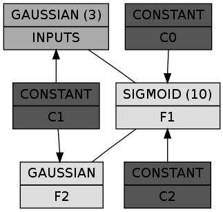
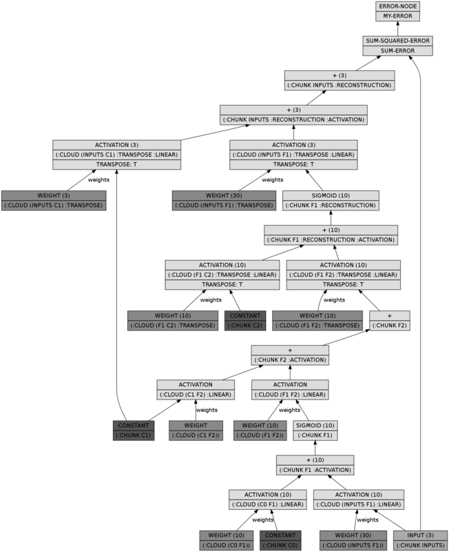

Introduction to MGL (part 3)
Tags: ai, lisp, Date: 2009-12-29
UPDATE – This post is out of date with regards to current MGL. Please refer to the documentation instead.
In Introduction to MGL (part 2), we went through a trivial example of a backprop network. I said before that the main focus is on Boltzmann Machines so let's kill the suspense here and now by cutting straight to the heart of the matter.
Cottrell's Science article provides a clear and easy to follow description of the spiral problem that we are going to implement. The executive summary is that we want to train an auto-encoder: a network that reproduces its input as output with a small encoding layer somewhere in between. By forcing the information through the bottleneck of the encoding layer the network should pick up a low dimensional code that represents the input, thus performing dimensionality reduction.
The function under consideration is f(x)[x, sin(x), cos(x)]. It
is suprisingly difficult to learn the mapping fromxtof(x)`. A
network architecture that is able to represent this transformation
has 3 inputs, 10 neurons in the next layer, 1 neuron in the encoding
layer, 10 neurons again in the reconstruction part and 3 in the
output layer. However, randomly initialized backpropagation fails at
learning this; a better solution is to first learn a Deep Belief
Network, \"unroll\" it to a backprop network and use backprop to
fine tune the weights.
A Deep Belief Network is just a stack of Restricted Boltzmann Machines. An RBM is a BM restricted to be a two layer network with no intralayer connections. The lower layer is called the visible, and the higher layer is called hidden layer because from the point of view of a single RBM, it is the visible layer that's connected to – maybe indirectly – to external stimuli. In the upward pass of a DBN, where the low level representations are subsequently transformed into higher level ones by the constituent RBMs, the values of the hidden units are clamped onto the visible units of the next RBM. In other words, an RBM shares its visible and hidden layers with the hidden and visible layers of the RBM below and above, respectively, respectively.
Let's start with a few utility functions:
(defun sample-spiral ()
(random (flt (* 4 pi))))
(defun make-sampler (n)
(make-instance 'counting-function-sampler
:max-n-samples n
:sampler #'sample-spiral))
(defun clamp-array (x array start)
(setf (aref array (+ start 0)) x
(aref array (+ start 1)) (sin x)
(aref array (+ start 2)) (cos x)))
(defun clamp-striped-nodes (samples striped)
(let ((nodes (storage (nodes striped))))
(loop for sample in samples
for stripe upfrom 0
do (with-stripes ((stripe striped start))
(clamp-array sample nodes start)))))Subclass RBM and define SET-INPUT using the above utilites:
(defclass spiral-rbm (rbm) ())
(defmethod mgl-train:set-input (samples (rbm spiral-rbm))
(let ((chunk (find 'inputs (visible-chunks rbm) :key #'name)))
(when chunk
(clamp-striped-nodes samples chunk))))Define the DBN as a stack of two RBMs: one between the 3 inputs and 10 hidden features, the other between the 10 hidden features and the encoding layer that's unsurprisingly has a single neuron:
(defclass spiral-dbn (dbn)
()
(:default-initargs
:layers (list (list (make-instance 'constant-chunk :name 'c0)
(make-instance 'gaussian-chunk :name 'inputs :size 3))
(list (make-instance 'constant-chunk :name 'c1)
(make-instance 'sigmoid-chunk :name 'f1 :size 10))
(list (make-instance 'constant-chunk :name 'c2)
(make-instance 'gaussian-chunk :name 'f2 :size 1)))
:rbm-class 'spiral-rbm))Note that by default, each pair of visible and hidden chunks is
connected by a FULL-CLOUD, the simplest kind of connection.
INPUTS via the cloud between INPUTS and F1 contributes to the
activation of F1: in the upward pass the values found in INPUTS
are simply multiplied by a matrix of weights and the result is added
to the activation of F1. Downward pass is similar.
Once the activations are calculated according to what the clouds
prescribe, chunks take over control. Each chunk consists of a number
of nodes and defines a probability distribution over them based on
the activations. For instance, SIGMOID-CHUNK is a binary chunk:
each node can take the value of 0 or 1 and the probability of 1 is
1 / (1 + e^(-x)) where X is the activation of the node.
Nodes in a GAUSSIAN-CHUNK are normally distributed with means equal
to their activations and unit variance. In SPIRAL-DBN above the
INPUTS and the final code, F2, are gaussian.
Let's check out how it looks:
(let* ((dbn (make-instance 'spiral-dbn))
(dgraph (cl-dot:generate-graph-from-roots dbn (chunks dbn))))
(cl-dot:dot-graph dgraph "spiral-dbn.png" :format :png))
In a box the first line shows the class of the chunk and the number of nodes in parens (omitted if 1), while the second line is the name of the chunk itself. The constant chunks – in case you wonder – provide the connected chunks with a bias. So far so good. Let's train it RBM by RBM:
(defclass spiral-rbm-trainer (rbm-cd-trainer) ())
(defun train-spiral-dbn (&key (max-n-stripes 1))
(let ((dbn (make-instance 'spiral-dbn :max-n-stripes max-n-stripes)))
(dolist (rbm (rbms dbn))
(train (make-sampler 50000)
(make-instance 'spiral-rbm-trainer
:segmenter
(repeatedly (make-instance 'batch-gd-trainer
:momentum (flt 0.9)
:batch-size 100)))
rbm))
dbn))Now we can unroll the DBN to a backprop network and add the sum of the squared differences between the inputs and the reconstructions as the error:
(defclass spiral-bpn (bpn) ())
(defmethod mgl-train:set-input (samples (bpn spiral-bpn))
(clamp-striped-nodes samples (find-lump (chunk-lump-name 'inputs nil) bpn)))
(defun unroll-spiral-dbn (dbn &key (max-n-stripes 1))
(multiple-value-bind (defs inits) (unroll-dbn dbn)
(let ((bpn-def `(build-bpn (:class 'spiral-bpn
:max-n-stripes ,max-n-stripes)
,@defs
(sum-error (->sum-squared-error
:x (lump ',(chunk-lump-name 'inputs nil))
:y (lump ',(chunk-lump-name
'inputs
:reconstruction))))
(my-error (error-node :x sum-error)))))
(let ((bpn (eval bpn-def)))
(initialize-bpn-from-bm bpn dbn inits)
bpn))))The BPN looks a whole lot more complicated, but it does nothing more than performing a full upward pass in the DBN and a full downward pass:
(let* ((dbn (make-instance 'spiral-dbn))
(bpn (unroll-spiral-dbn dbn))
(dgraph (cl-dot:generate-graph-from-roots bpn (lumps bpn))))
(cl-dot:dot-graph dgraph "spiral-bpn.png" :format :png))
Training it is as easy as:
(defclass spiral-bp-trainer (bp-trainer) ())
(defun train-spiral-bpn (bpn)
(train (make-sampler 50000)
(make-instance 'spiral-bp-trainer
:segmenter
(repeatedly
(make-instance 'batch-gd-trainer
:learning-rate (flt 0.01)
:momentum (flt 0.9)
:batch-size 100)))
bpn)
bpn)I'm tempted to dwell on pesky little details such as tracking errors,
but this entry is long enough already. Instead, load the mgl-example
system and see what example/spiral.lisp has in addition to what was
described. Evaluate the block commented forms at the end of the file
to see how training goes.